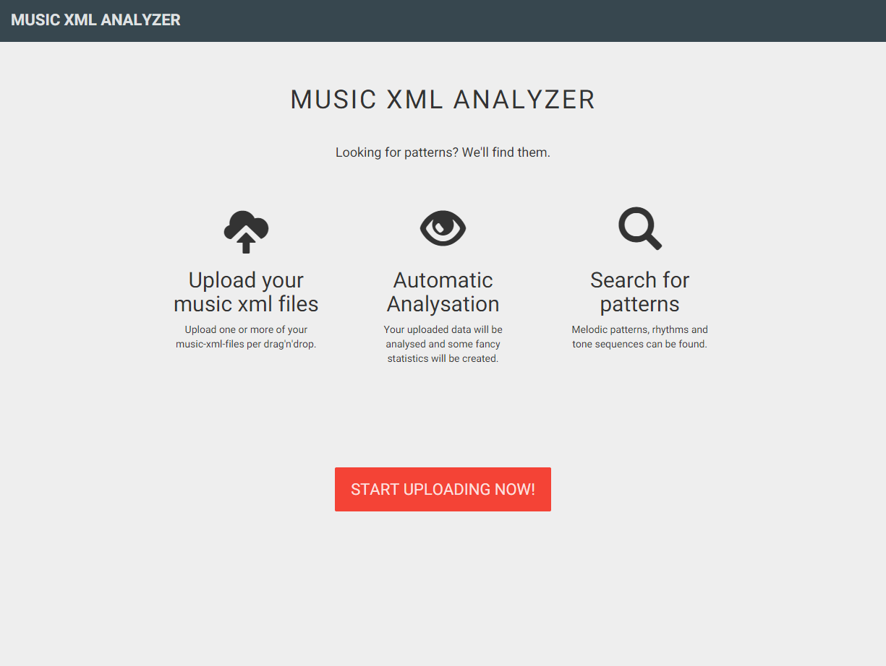
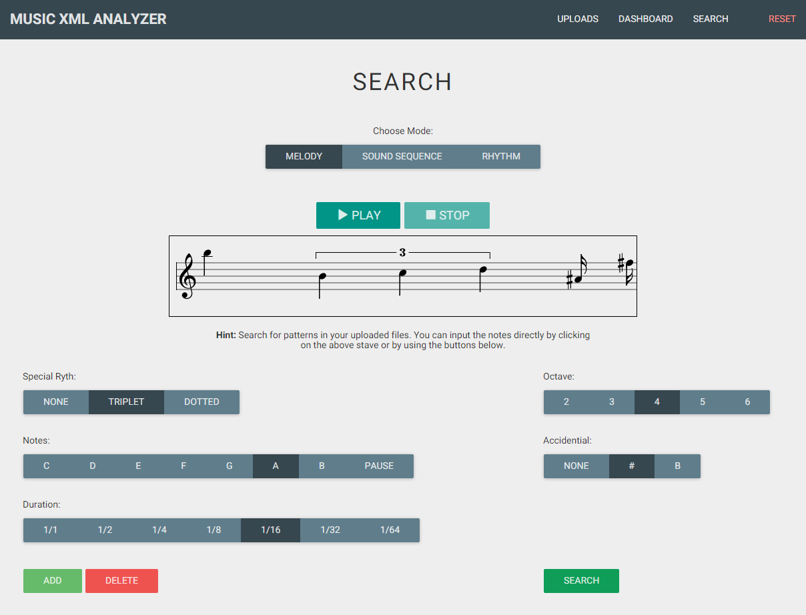
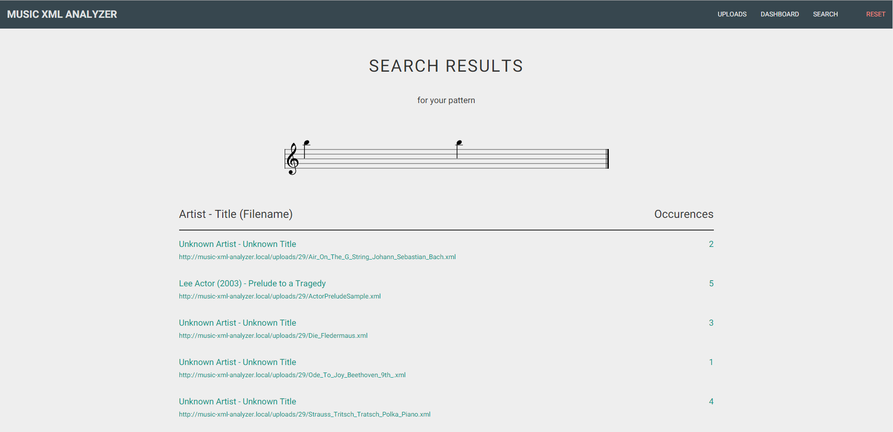
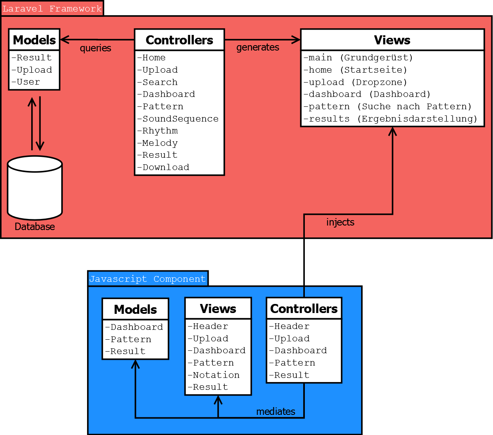
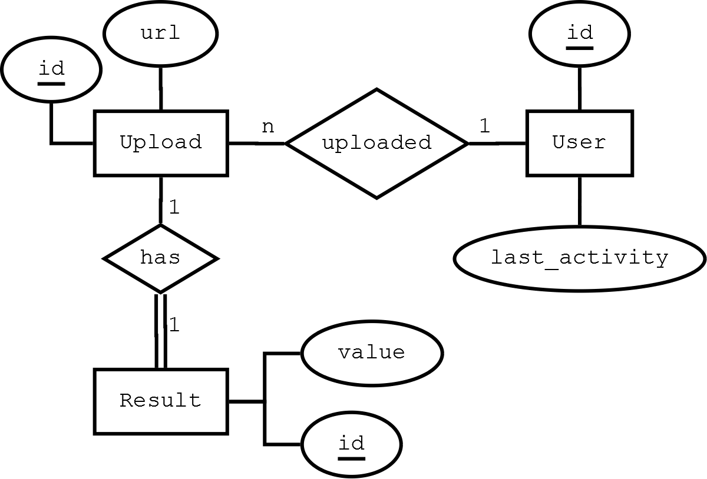

Music XML Analyzer
Zusammenfassung
Bei einer komplexen Untersuchung von Musikstücken ist es oft unumgänglich, auch die Partitur auszuwerten. Die manuelle Analyse ist, vor allem wenn mehrere Partituren gleichzeitig untersucht werden sollen, oftmals aufwendig und mühselig. Neben kostenpflichtiger Software wie Finale[1] und kostenloser Software wie Musescore[2], die zum Erstellen und Bearbeiten von Partituren geeignet sind, entstehen auch einige Projekte, die das Festhalten und Bearbeiten von Noten im Browser erlauben. Beispiele hierfür sind Vexflow[3] oder Noteflight[4]. Diesen Programmen fehlt jedoch eine umfangreiche Komponente zur Analyse und statistischen Auswertung von Musikstücken. Der Music-XML-Analyzer setzt genau hier an und bietet die Möglichkeit, Partituren im Music-XML-Format statistisch auszuwerten und in Musikstücken nach verschiedenen Pattern zu suchen.
Setup-Anweisungen
Da es sich um eine Webanwendung handelt, sind zum Betrieb keine Installationsschritte notwendig. Die Projektseite ist unter der URL http://music-xml-analyzer.herokuapp.com/ zu erreichen. Aufgrund der Beschaffenheit des Projekts wurde die Seite lediglich für Bildschirme mit einer Mindestbreite von 1200 Pixeln optimiert. Um eine spätere Anpassung für weitere Bildschirmgrößen zu ermöglichen wurde das Twitter Bootstrap Framework eingesetzt.
Problemstellung
Das System soll Musikinteressierte oder Forscher dabei unterstützen, Musik einerseits statistisch auszuwerten und andererseits konkrete Suchmuster in mehreren Musikstücken aufzufinden. Aktuelle Softwarelösungen wie Musescore bieten meist keine Komponenten, um diese Aufgaben zu erfüllen.
Projektbeschreibung
Das System lässt sich grob in drei Teilbereiche unterteilen, die in den folgenden Abschnitten näher erläutert werden. Zur besseren Übersichtlichkeit werden die Teilbereiche entsprechend dem Workflow des Nutzers aufgeteilt. Im ersten Schritt erfolgt der Upload von Dateien und daraufhin die automatische, statistische Auswertung. Den letzten Schritt stellt die Suche nach Mustern in den hochgeladenen Dateien dar. Auf der Startseite der Anwendung (Abbildung 1) bekommt der Nutzer einen kleinen Überblick über die Funktionen und kann per Klick auf den Button START UPLOADING NOW! mit der Arbeit beginnen.
 Abbildung 1: Startseite (Screenshot)
Upload
Um dem Anwender die Möglichkeit der statistischen Analyse von Musikstücken zu bieten, müssen zunächst Dateien im MusicXML-Format hochgeladen werden. Das im XML-Standard realisierte, offene Austauschformat MusicXML wird von vielen Notensatzprogrammen unterstützt und löst das vorangehende Notation Interchange File Format (NIFF)[5] ab. Zudem bieten einige Portale, wie zum Beispiel Musescore[6] den kostenlosen Download von Partituren im MusicXML-Format an, wodurch eine Vielzahl von Musikstücken bereits verfügbar ist. Auf der Homepage von Musescore sind die Partituren in verschiedenen Formaten verfügbar und können nach kostenloser Registrierung heruntergeladen werden. Mit Hilfe der ebenfalls kostenlosen Software können die Partituren in andere Formate (mscx, mscz, xml, mid, ogg, wav oder pdf) umgewandelt werden. Abbildung 2 zeigt die Uploadfunktion des Music-XML-Analyzer, nachdem verschiedene Dateien hochgeladen wurden. Mit einem Klick auf ANALYZE werden die Dateien ausgewertet.
 Abbildung 2: Upload (Screenshot)
Abbildung 2: Upload (Screenshot)
Statistische Analyse
Die hochgeladenen Dateien werden nach erfolgreichem Upload automatisch analysiert. Dabei werden neben den Noten und Pausen auch die enthaltenen Intervalle, Taktarten und Instrumente gezählt.
Dashboard
Im Dashboard (Abbildung 3) erhält der Nutzer einen Überblick über die wichtigsten Fakten und Statistiken zu den einzelnen Musikstücken oder über den gesamten hochgeladenen Korpus. Dabei werden die Noten- und Intervallverteilung in einem Balkendiagramm, die Distribution der Tonarten, Notenlängen und Taktarten in einem Kreisdiagramm dargestellt. Daneben werden noch einige Fakten zur Anzahl und zum Auftreten der Takte, Noten, Pausen und Instrumente angegeben.
 Abbildung 3: Dashboard (Screenshot)
Abbildung 3: Dashboard (Screenshot)
Suche nach Patterns
Vom Dashboard aus gelangt der User durch einen Klick auf den Button SEARCH FOR PATTERNS oder im Header via SEARCH zur Patternsuche. Die verschiedenen Möglichkeiten, die der Benutzer hat, um seine Musikstücke zu durchsuchen, werden im Folgenden kurz erläutert und sind in Abbildung 4 dargestellt. Als ersten Schritt muss zwischen MELODY, SOUND SEQUENCE oder RHYTHM unterschieden werden, wobei MELODY hier voreingestellt ist. Daraufhin kann der Benutzer entweder per Maus direkt auf den Notenzeilen, oder mit Hilfe der Buttons die gewünschten Noten eingeben. Werden die Buttons zur Noteneingabe verwendet, muss jede Note mit einem Klick auf ADD hinzugefügt werden. Durch Klick auf DELETE wird die zuletzt eingegebene Note wieder gelöscht. Alle Noten werden in der angezeigten Notenzeile dargestellt und können jederzeit abgespielt werden. Wird die Maus zur Noteneingabe verwendet, so wird standartmäßig eine Viertelnote ohne Vorzeichen an der entsprechenden Stelle eingegeben. Triolen, punktierte Noten, Vorzeichen oder eine andere Notenlänge müssen mit Hilfe der Buttons eingestellt werden. Alle Noten der dritten bis sechsten Oktave mit einer Dauer von einer Ganzen Note bis zur 64tel Note können ausgewählt werden. Auch Noten mit Kreuz- oder B-Vorzeichen können hinzugefügt werden.
 Abbildung 4: Search (Screenshot)
Suchergebnisse
Ist der Benutzer mit seiner Noteneingabe zufrieden, werden durch einen Klick auf SEARCH alle hochgeladenen Musikstücke nach dem erstellten Pattern durchsucht. Abbildung 5 zeigt die Ergebnisseite der Suche. Hier wird im oberen Bereich das gesuchte Pattern noch einmal dargestellt und darunter die Musikstücke, welche das Pattern enthalten, samt jeweiliger Häufigkeit der Treffer.
 Abbildung 5: Searchresult (Screenshot)
Klickt der User auf einen Treffer, so wird eine Detailansicht aufgerufen, wie in Abbildung 6 zu erkennen ist. Hier werden neben dem Titel des Stücks die jeweiligen Trefferstellen in einem Carousel dargestellt und farblich hervorgehoben. Mit Hilfe der Pfeile kann zwischen den Treffern hin und her gewechselt werden. Informationen, in welcher Stimme und in welchem Takt das Pattern gefunden wurde, werden ebenfalls dargestellt. Ein Klick auf PLAY spielt einen Auszug, der das Pattern enthält, ab. Der Nutzer hat außerdem die Möglichkeit, alle visualisierten Treffer als PDF-Dokument zu exportieren, was mit einem Klick auf den Button EXPORT AS PDF erreicht werden kann.
 Abbildung 6: Searchresult Details (Screenshot)
Abbildung 6: Searchresult Details (Screenshot)
Architektur und Implementierung
Projektablauf
Die Projektanforderungen wurden zunächst in Form von User Stories erfasst, welche im digitalen Anhang XX einzusehen sind. Um den Projektablauf zu organisieren, wurde das Issue-System von Github benutzt. Hierbei repräsentierten die Meilensteine jeweils eine User Story. Diesen wurden anschließend kleinere Teilaufgaben, die Issues, zugewiesen. Eine zusätzliche Erweiterung für Google Chrome namens ZenHub[7] erlaubte die Anordnung der Issues in Form eines Boards mit verschiedenen Pipelines. Das verwendete Board wurde, angelehnt an das Projektmanagement-Framework Kanban, in „Backlog“, „Nice to have“, „To-Do“, „In Progress“ und „Closed“ unterteilt.
Zu Beginn des Projekts konnten die Zuständigkeiten relativ klar aufgeteilt werden. Während Lukas Lamm für die Implementierung des verwendeten Frameworks Laravel und die daran gebundene Datenbankarchitektur zuständig war, kümmerte sich Tobias Semmelmann um die Frontend-Seite des Systems. David Lechler wurde mit der Traversierung, Analyse und Entwicklung der Suchalgorithmen für die MusicXML-Dateien betraut. Matthias Schneider kümmerte sich um die Eingabe der Suchpatterns. In späteren Projektphasen verwischten die Grenzen der Zuständigkeiten immer häufiger. Dadurch griff Lukas Lamm auch in die Darstellung der Suchergebnisse in Form von Takten und Noten unterstützend ein und kümmerte sich um die beiden Export-Funktionen. David Lechler übernahm schließlich die Wiedergabe der Ergebnisse mit Midi.js.
Frameworks und Bibliotheken
Als Grundlage der Anwendung wurde das PHP Framework Laravel[8] in Version 4.2 verwendet, welches auf dem Model-View-Controller-Pattern basiert. Dieses bietet Möglichkeiten, das Routing zwischen den einzelnen Controllern und Views zu handhaben, sowie die Gestaltung der Views durch Templates. Zudem konnte mit den in Laravel integrierten Models das Datenbankschema in SQL und die einfache Abfrage realisiert werden.
Zur Realisation interaktiver Funktionen und Vereinfachung von Javascript-Code wurde das Framework jQuery[9] verwendet. Zudem wird jQuery vom eingesetzten CSS-Framework Twitter Bootstrap[10] und weiteren hier genannten Bibliotheken benötigt. Um einen modernen Look im Material Design zu erzielen, wurde zudem das Theme Material Design for Bootstrap[11] eingebunden. Die Darstellung der Graphen erfolgt mit der Bibliothek D3.js[12], die Ausgabe der Noten hingegen wird über die API Vexflow[13] abgewickelt. Die Visualisierung von Statusnachrichten wird mit dem Plugin Typed.js[14] animiert. Die Darstellung und Abwicklung von hochgeladenen Dateien erfolgt durch die Bibliothek Dropzone.js[15] im Zusammenspiel mit dem Framework Laravel. Die Audioausgabe von eingegebenen Pattern zur Suche oder von Ergebnisausschnitten wird mit dem Framework MIDI.js[16] abgewickelt, während die Exportfunktion der Ergebnisse als PDF mit dem Plugin jsPDF[17] erfolgt.
Systemarchitektur
Abbildung 7 zeigt den Aufbau des Laravel-Frameworks im Zusammenspiel mit den jeweiligen Javascript-Komponenten. Die Laravel-Komponente kümmert sich dabei um die serverseitige Logik der Anwendung, wie die Auslieferung von HTML-Seiten über eine integrierte Templating-Engine und die Kommunikation mit der Datenbank zur persistenten Speicherung. In Abbildung 7 wird auch der Aufbau nach dem Model-View-Controller-Pattern deutlich, demzufolge die grafische Repräsentation (View) von der Logik (Controller) und der Datenschicht (Model) getrennt ist. Die Javascript-Komponente der Anwendung ist ebenso nach dem MVC-Pattern aufgebaut und kümmert sich hauptsächlich um die Interaktivität der Anwendung. Beispielsweise werden die Suchmuster in Javascript vorerst clientseitig zwischengespeichert und erst beim Absenden der Suchanfrage an der Server gleitet. Weitere Aufgabengebiete sind die grafische Aufbereitung der Analysedaten und Partiturausschnitten, sowie die Wiedergabe einzelner Sequenzen.
 Abbildung 7: Systemarchitektur
Um dem Nutzer die Möglichkeit zu bieten seine Arbeit ohne zusätzliche Speicherung immer aktuell zu halten wurde ein einfaches Datenbankschema entwickelt, welches in Abbildung 8 als ERM-Model aufgeführt ist. Den Nutzern wird dabei beim ersten betreten der Anwendung eine ID zugewiesen, die gleichzeitig als Cookie beim Nutzer im Browser hinterlegt wird. Auf den Server geladene Dateien werden entsprechend mit dem Nutzer referenziert, ebenso wie einem Upload-Objekt nach erfolgreicher Analyse dessen Ergebnisse zugeordnet werden. Bei der Konzeption wurde bewusst auf eine aufwendige Nutzerverwaltung mit Registrierung und Anmeldung verzichtet, da dies den schnellen Einstieg oft erheblich behindert.
 Abbildung 8: Datenbankschema
Ausblick
Eine Funktion, die nicht mehr implementiert wurde ist das Abspielen einzelner, hochgeladener Musikstücke. Der Grund hierfür ist, dass bei den Tests gegen Ende des Projektes noch einige Bugs gefunden wurden und die verbleibende Zeit damit verbracht wurde, diese zu beheben.
Eine Erweiterungsmöglichkeit des Music-XML-Analyzer wäre, die Beschränkung auf das Format Music-XML aufzuheben, um so andere Dateitypen hochladen und analysieren zu können.
Über das Projekt
Live-DemoDas Projekt wurde im Rahmen des Kurses Digital Humanities unter der Leitung von Dr. Manuel Burghardt im Wintersemester 2014/2015 an der Universität Regensburg durchgeführt.
Kontakt:
- Lukas Lamm (freak.im.kaefig@gmx.net, http://lukaslamm.de)
- David Lechler (davidlechler@outlook.com)
- Tobias Semmelmann (semmler1988@gmail.com)
- Matthias Schneider (matthias.schneider89@gmail.com)
Links
[1] http://www.klemm-music.de/makemusic/finale/ 27.03.2015
[2] https://musescore.org/de 27.03.2015
[3] http://my.vexflow.com/ 27.03.2015
[4] https://www.noteflight.com/ 27.03.2015
[5] https://de.wikipedia.org/wiki/MusicXML 27.03.2015
[6] https://musescore.org/de 27.03.2015
[7] https://www.zenhub.io/ 27.03.2015
[8] http://laravel.com/ 27.03.2015
[9] https://jquery.com/ 27.03.2015
[10] http://getbootstrap.com/ 27.03.2015
[11] https://fezvrasta.github.io/bootstrap-material-design/ 27.03.2015
[12] http://d3js.org/ 27.03.2015
[13] http://www.vexflow.com/ 27.03.2015
[14] http://www.mattboldt.com/demos/typed-js/ 27.03.2015
[15] http://www.dropzonejs.com/ 27.03.2015
[16] http://mudcu.be/midi-js/ 27.03.2015
[17] https://parall.ax/products/jspdf 27.03.2015